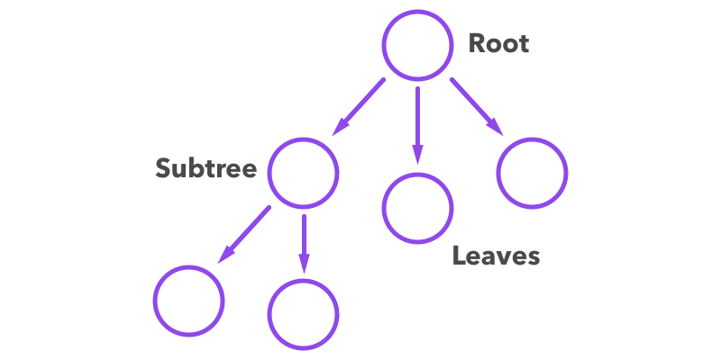

Binary Search Tree
A binary search tree is a particular type of data container storing values that can provide for efficient search. The "tree" separates into two identifiers, left and right, and recursive splitting creates the whole sub-structure of the data container.
